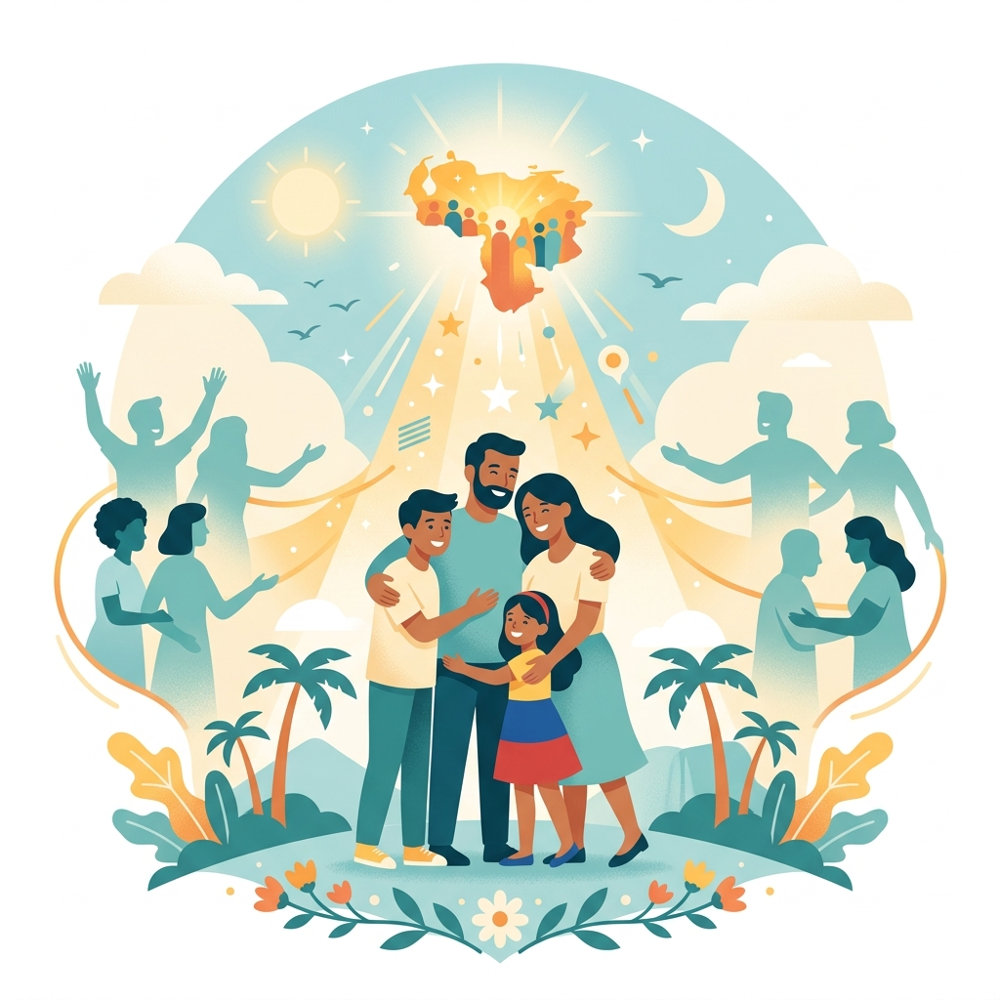

Unidos para reencontrarnos: Tecnología al servicio de la búsqueda
Una herramienta humanitaria basada en inteligencia artificial y reconocimiento facial. Reporta o busca personas desaparecidas de forma ágil y segura directamente desde WhatsApp.

Cómo funciona la búsqueda
Hemos simplificado el proceso al máximo a través de WhatsApp para que cualquier persona pueda usarlo, sin necesidad de descargar aplicaciones complejas ni contar con conexiones de alta velocidad.
Inicia el chat
Presiona cualquiera de nuestros botones de acción para abrir WhatsApp en tu dispositivo móvil o computadora y envía un mensaje de saludo.
Sube la foto
Envía una foto clara de la persona que estás buscando o, si eres rescatista, de la persona encontrada que deseas registrar en el sistema.
Recibe una respuesta
Nuestra inteligencia artificial procesará la imagen, cruzará los datos con los registros y te enviará de inmediato cualquier posible coincidencia.
Elige tu perfil de usuario
Nuestra plataforma conecta a personas que buscan con aquellas dispuestas a colaborar para facilitar el reencuentro de la comunidad.
¿Buscas a un familiar?
Si tienes un ser querido desaparecido, te guiaremos paso a paso para cargar sus datos y buscar coincidencias faciales en nuestra red de rescatistas y centros médicos.
¿Eres rescatista o voluntario?
Si localizaste a una persona desorientada o en estado de vulnerabilidad, registra su fotografía de forma segura para ayudar a que su familia la localice de inmediato.